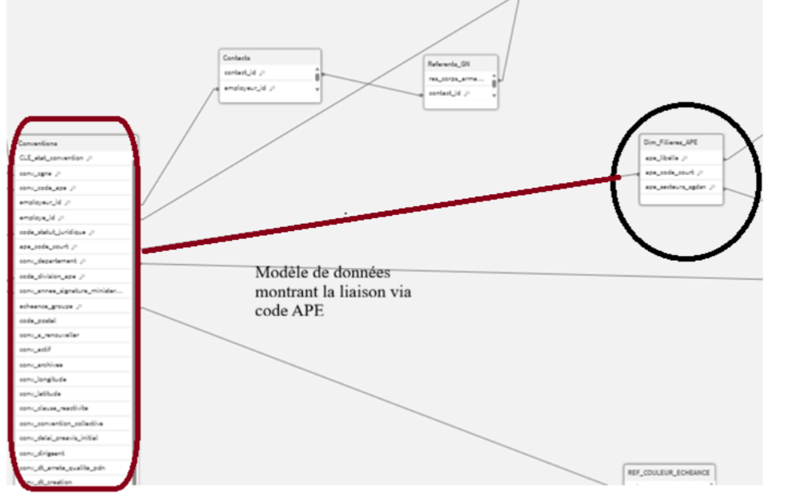
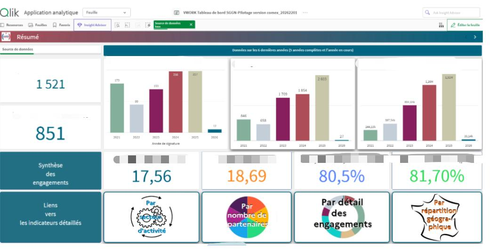

3 ans en environnement institutionnel.
Dashboards décisionnels, SQL, BI.
J'ai conçu et déployé des tableaux de bord analytiques utilisés par des décideurs au Ministère des Armées. Je maîtrise Qlik Sense, SQL, Tableau et Metabase — et je cherche à mettre ces compétences au service d'une équipe data ambitieuse.
Chargé de mission Data Analyst
— Secrétariat Général de la Garde Nationale
Poste opérationnel au sein d'un environnement institutionnel exigeant. Production d'analyses et de dashboards utilisés directement en instance de direction.


Projets techniques sélectionnés
Quatre projets complémentaires couvrant SQL, BI, datavisualisation et modélisation de bases de données.
Infocentre SGGN — Pilotage des conventions
Maintenance et amélioration d'un infocentre Qlik Sense en production, utilisé pour le suivi des conventions à destination de la direction du Ministère. Correction de scripts de chargement, intégration de référentiels externes et amélioration de la lisibilité des indicateurs.
SAE 502 — Migration SQL ⇄ NoSQL
Conception et migration d'un modèle de données entre paradigmes SQL et NoSQL. Travail sur la normalisation, la dénormalisation et la séparation entre logique métier et couche de persistance.
Dataviz — Immobilier & Transports
Analyse de la corrélation entre marché immobilier et fréquentation des gares. Préparation de données hétérogènes, nettoyage, puis restitution sur Tableau Public.
SAE 101 — SQL & Reporting
Mise en place d'un environnement d'analyse et de reporting à partir d'une base PostgreSQL. Requêtage, exploration et création d'un dashboard dynamique sur Metabase connecté à la base.
Ce que je sais faire, et comment
Compétences validées en situation réelle au Ministère des Armées et en projets techniques.
| Domaine | Ce que j'ai fait concrètement | Outils mobilisés |
|---|---|---|
| Dashboards & BI | Conception, déploiement et maintenance d'un infocentre Qlik Sense pour le pilotage stratégique des conventions au SGGN. | Qlik Sense, Metabase, Tableau, Power BI |
| Traitement des données | Fiabilisation de scripts de chargement en production, gestion d'anomalies dans les sources, enrichissement par référentiels externes. | Qlik Sense scripting, Excel avancé, Python |
| SQL & bases de données | Requêtage, modélisation entité-association, migration SQL ⇄ NoSQL, conception complète de schémas relationnels. | PostgreSQL, MySQL, MongoDB, MySQL Workbench |
| Analyse & reporting | Production de rapports analytiques diffusés en instances décisionnelles, optimisation des indicateurs de performance. | Excel, Qlik Sense, Python (pandas) |
| Datavisualisation | Restitution visuelle de données hétérogènes, conception de visualisations lisibles pour des publics non-techniques. | Tableau, Metabase, Qlik Sense |
Technologies utilisées
Outils mobilisés en situation réelle, en alternance ou dans des projets techniques.
Où je veux aller
Une progression progressive et structurée vers un profil Data Analyst autonome et stratégique.
Poste Data Analyst Junior
- Consolider SQL et analyse de données en contexte business
- Monter en compétence sur Power BI
- Contribuer à des projets data end-to-end
Expertise BI & Analyse
- Maîtrise de Python pour l'analyse de données
- Participation à des projets d'analyse complexes
- Montée en expertise Business Intelligence
Profil autonome & stratégique
- Missions data à fort impact stratégique
- Forte autonomie sur des projets data complets
- Éventuelle orientation freelance / remote
Data Analyst Junior à partir de septembre 2026.
3 ans d'expérience en environnement institutionnel exigeant, dashboards en production, SQL et BI. Je cherche à m'investir dans une équipe data avec de vraies problématiques métier.